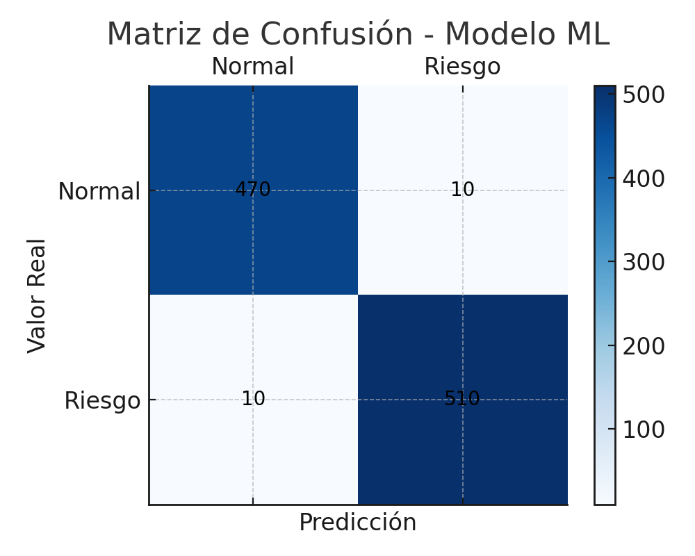

La Revolución e-Health está Aquí
La monitorización remota de pacientes (RPM) se ha convertido en un pilar fundamental de la salud conectada. La capacidad de recolectar signos vitales de forma continua y detectar anomalías tempranamente está redefiniendo la atención médica, ofreciendo un enorme potencial para mejorar los resultados de los pacientes y la eficiencia del sistema de salud.
Crecimiento Exponencial
El mercado de e-Health y RPM está experimentando una adopción acelerada, impulsada por avances tecnológicos y una creciente demanda de soluciones de atención médica más accesibles y personalizadas.
Tecnologías Clave Impulsando la Innovación
Varias tecnologías convergentes son la base de esta transformación en e-Health. Estas herramientas no solo permiten la recolección de datos, sino también su análisis inteligente para una toma de decisiones proactiva.
Internet de las Cosas (IoT)
Dispositivos y sensores portátiles que recopilan datos biométricos de forma continua y no invasiva.
Machine Learning (ML)
Algoritmos que analizan los datos para identificar patrones, predecir riesgos y personalizar la atención.
Edge Computing
Procesamiento de datos más cercano al paciente para reducir la latencia y mejorar la respuesta en tiempo real.
Cloud Computing
Plataformas escalables para el almacenamiento, procesamiento avanzado y gestión de grandes volúmenes de datos de salud.
Un Modelo para RPM Moderno: Arquitectura del Sistema
Una arquitectura robusta es esencial para un sistema de RPM eficaz. El informe presenta un modelo híbrido edge-cloud que combina lo mejor de ambos mundos para garantizar modularidad, escalabilidad y baja latencia. Esta arquitectura representa una tendencia creciente en el diseño de sistemas e-Health.
Componentes de la Arquitectura Propuesta

Este diagrama ilustra la arquitectura edge-cloud extendida a dispositivos portables y servicio de alertas, mostrando la interacción entre los nodos IoT, el broker MQTT, los microservicios de Machine Learning y notificaciones.
El Viaje de los Datos: Del Sensor a la Alerta
Comprender el flujo de datos es clave para apreciar cómo estos sistemas transforman lecturas biométricas en acciones preventivas. El proceso está diseñado para ser rápido y eficiente, crucial en escenarios de salud.
1. Datos Biomédicos
(HR, SYS, DIA) Generados
2. Envío vía MQTT
(Tópico 'vitals')
3. Procesamiento ML
(Predicción de Riesgo)
4. Alerta (si hay riesgo)
(Notificación al Usuario)
Los datos como frecuencia cardíaca (HR), presión sistólica (SYS) y diastólica (DIA) se envían continuamente. El servicio de Machine Learning procesa estas lecturas y, ante una predicción de riesgo, invoca al servicio de notificaciones para alertar al usuario y/o personal médico.
Midiendo el Éxito: Detección de Riesgos con IA
La efectividad de un sistema de RPM basado en ML se mide por su capacidad para detectar riesgos con precisión. Los resultados del modelo de regresión logística implementado en el estudio demuestran un alto rendimiento, una tendencia vital para la confianza y adopción de estas tecnologías.
Métricas de Rendimiento del Modelo
El modelo muestra alta precisión, sensibilidad (capacidad de detectar casos de riesgo) y especificidad (capacidad de detectar casos normales).
Matriz de Confusión del Modelo ML
La matriz evidencia una baja tasa de falsos negativos (casos de riesgo no detectados), crucial para la seguridad del paciente. Los valores corresponden a los resultados de la simulación.
Comparativa de Rendimiento (PC Local vs. Raspberry Pi 3)
| Métrica | PC Local | Pi 3 | Δ |
|---|---|---|---|
| Latencia inferencia ML | 12 ms | 18 ms | +50 % |
| Latencia total (sensor→alerta) | 75 ms | 120 ms | +60 % |
| CPU medio (ML) | 8 % | 25 % | +213 % |
| Memoria ML | 45 MB | 60 MB | +33 % |
| Consumo estimado | 5 W | 3 W | -40 % |
| Ancho banda MQTT | 5 KB/s | 5 KB/s | 0 % |
Esta tabla compara el rendimiento del sistema de e-Health ejecutándose en una PC local versus una Raspberry Pi 3 (Pi 3), destacando las diferencias en latencia, uso de CPU y memoria, consumo y ancho de banda.
La Frontera Wearable: e-Health en Movimiento
La integración con dispositivos portables como relojes inteligentes y smartphones es una tendencia dominante. Estos dispositivos no solo recopilan datos, sino que también pueden ejecutar modelos de ML ligeros (usando TensorFlow Lite), acercando la inteligencia al usuario y permitiendo una monitorización más autónoma y con menor latencia.
Adopción Creciente de Wearables en Salud
Los wearables están transformándose de gadgets de estilo de vida a herramientas vitales de e-Health, facilitando el monitoreo continuo y la detección temprana.
Impacto de Wearables en RPM
Los wearables contribuyen significativamente a la reducción de latencia, la mejora de la adherencia del paciente y la posibilidad de intervenciones más rápidas.
Ventajas Clave e Impacto en el Mercado
La adopción de arquitecturas e-Health inteligentes como la propuesta conlleva múltiples beneficios que están reconfigurando el panorama de la atención médica. Estas ventajas no solo mejoran la eficiencia operativa sino, lo más importante, el bienestar del paciente.
📉 Reducción de Latencia
El procesamiento en el borde minimiza el retardo en la detección de riesgos, permitiendo respuestas más rápidas.
⚙️ Optimización de Recursos
Uso eficiente de contenedores Docker y microservicios que evitan la sobrecarga del servidor.
📈 Escalabilidad
La arquitectura de microservicios facilita la adición de nuevos módulos y la adaptación a crecientes demandas.
❤️ Beneficios para el Paciente
Alertas en tiempo real y monitoreo continuo pueden reducir hospitalizaciones y permitir intervenciones tempranas.
El Futuro de la Atención Conectada
La convergencia de IoT y ML en e-Health es solo el comienzo. La investigación y el desarrollo continúan impulsando innovaciones que prometen una atención médica aún más personalizada, predictiva y participativa.
Modelos ML en Dispositivo
Mayor adopción de TensorFlow Lite y similares para inferencias directamente en wearables.
Seguridad Mejorada
Integración de cifrado end-to-end y protocolos seguros para proteger la sensibilidad de los datos de salud.
Validación Clínica Rigurosa
Mayor énfasis en la validación con datos reales de pacientes y escalado en entornos clínicos robustos.